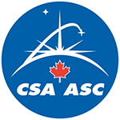

April 16, 2015 - Stephen Woodworth, Member of Parliament for Kitchener Centre announce that Qidni Labs Inc. of Kitchener received research and development (R&D) funding valued at close to $200,000.
April 16, 2015 - Stephen Woodworth, Member of Parliament for Kitchener Centre announce that Qidni Labs Inc. of Kitchener received research and development (R&D) funding valued at close to $200,000.
January 8, 2015 - Our Founder, Dr. Morteza Ahmadi, gives a keynote talk at Biomedical Engineering Symposium at McMaster University, Hamilton, Canada.
December 17, 2014 - Qidni received a technology development grant from Canadian Space Agency.
September 24, 2014 - The Global Action Challenge is a competitive investment opportunity to identify breakthrough prototypes, technologies or early-stage ventures that hold promise for transformative impact on health and food and are scalable business enterprises.
 Engineering student competes for one million dollar prize in 43North.
Engineering student competes for one million dollar prize in 43North.
 July 29, 2014Kidney cleaner company hits semifinals in lucrative competition.
July 29, 2014Kidney cleaner company hits semifinals in lucrative competition.
 July 15, 2014 - Qidni becomes a finalist in the 43North competition!
July 15, 2014 - Qidni becomes a finalist in the 43North competition!
 June 6, 2014 - Qidni joins Velocity Science.
June 6, 2014 - Qidni joins Velocity Science.
 June 5, 2014 - Qidni was accepted at Communitech Hub in Kitchener, Ontario, Canada.
June 5, 2014 - Qidni was accepted at Communitech Hub in Kitchener, Ontario, Canada.
 April 10, 2014 - Qidni was accepted at MaRS Discovery District.
April 10, 2014 - Qidni was accepted at MaRS Discovery District.
March 1, 2014 - Qidni was born!